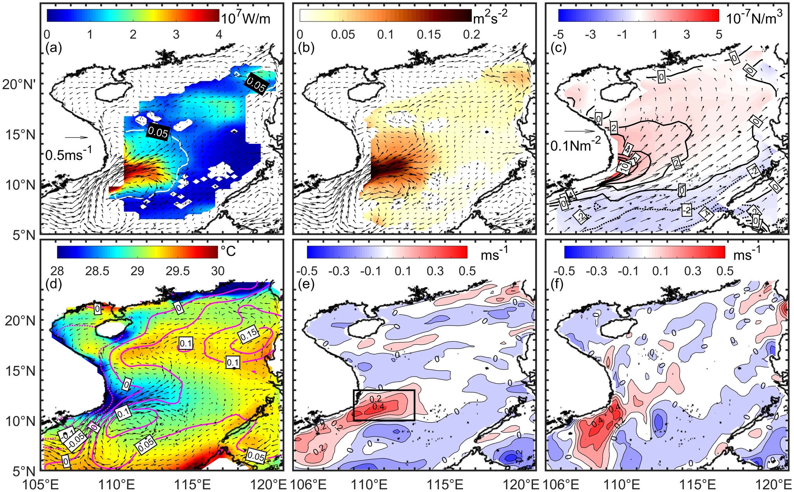
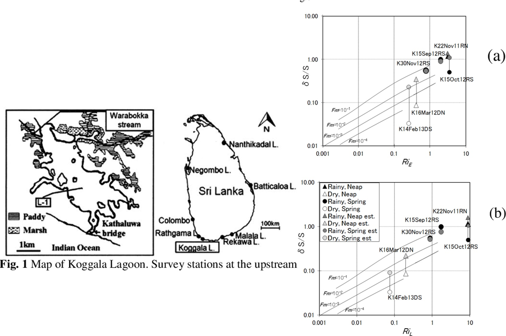
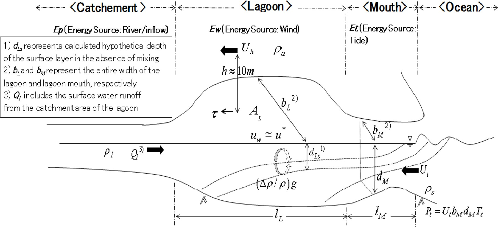

This study looks at how swirling water currents, called eddies, move heat and salt around in the Bay of Bengal (BOB).
We found that these eddies are very active in four specific areas: the northern BOB near its western boundary, the western BOB,
the southwestern BOB near Sri Lanka, and the southeastern BOB. In the northern and southwestern BOB, these eddies mainly move heat
during the pre-summer months (March to April) and the summer monsoon season (May to September). In the western and southeastern BOB,
the main activity happens during the post-summer monsoon season (October to November). Because the Bay of Bengal is partially
enclosed, these eddies don't just move heat and salt north and south but also east and west. This is important because it changes how
heat is distributed in the bay. We also found that the energy driving these eddies comes mainly from a process called baroclinic
instability in most regions, which happens when there's a difference in water density layers. In the southeastern BOB, another process
called barotropic instability, which involves the flow speed of water layers, is also important. Using a special model called 2.5-layer
reduced gravity model, we further studied this baroclinic instability and discovered that strong changes in water flow speed and weak water layering are key to
creating these energetic eddies. This understanding helps explain why and when these eddies are most active in moving heat around
in different parts of the Bay of Bengal.

This study looks at how the movement of heat by swirling water currents, called eddies, changes from year to year in the western part of the South China Sea during
the summer. We used a method to measure how these eddies mix heat and explored why these changes happen. Our findings show that the most significant heat movement
by eddies in the South China Sea happens in the western region during the summer. We noticed that in some years, such as 1994, 1999, 2002, 2006, 2008, 2009, 2012,
and 2014, there was a lot of heat movement and high energy in the water. In other years, like 1995, 2000, 2001, 2003, 2004, 2007, 2010, 2015, and 2017, there was
much less of this activity during the months of July, August, and September. By examining data along a specific longitude (110.75° E), we discovered that in the
years with strong heat movement, there was also a powerful eastward current at the surface of the water. This strong current helps to create more energetic eddies
through a process called baroclinic instability, which occurs due to differences in water layer speeds. The changes in these water layer speeds are linked to
differences in temperature across the region, which are influenced by several factors. These include the movement of water due to wind, the flow of water across
different latitudes, and the way heat is absorbed at the surface. Additionally, we found that local wind patterns and forces from distant areas also affect these
year-to-year changes in heat movement by eddies in the South China Sea


In this study, we developed a new parameter called the Lagoon Richardson Number (RiL) to better understand how water layers mixes in permanently open coastal
lagoons in Sri Lanka. This new measurement is based on an existing one used for estuaries (RiE), but we made it more suitable for these specific lagoons by
including not only the effect tides but also wind on water mixing. We also updated an existing model by replacing its old measurement (RiE)
with our new one (RiL) to make it more accurate for these types of lagoons. Using RiL, we found that during the dry season, there's a significant reduction in the
energy needed to mix the water, making wind-induced mixing more noticeable compared to the rainy season.
When we applied our updated model to the Koggala Lagoon, it proved to be better at predicting salinity mixing status, especially during the dry season,
compared to the older model known as Fischer’s model.